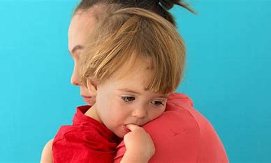

Maria e Eduardo adotaram Felipe, de 8 anos, acreditando estar preparados para os desafios. No entanto, a convivência trouxe dificuldades que eles não haviam antecipado. Felipe havia sofrido traumas profundos e demonstrava comportamentos desafiadores, como agressividade e rejeição aos pais adotivos.
"Achávamos que o amor seria suficiente, mas percebemos que precisávamos de mais apoio especializado para lidar com a situação."
Após tentativas de terapia familiar e suporte psicológico, o casal decidiu interromper o processo. Embora tenha sido doloroso, eles entenderam que Felipe precisava de uma estrutura que eles, naquele momento, não podiam oferecer.
 2.Falta de Apoio da Rede FamiliarJoana e Rafael adotaram uma menina de 6 anos, mas enfrentaram resistência da família extensa. Avós e tios não aceitavam a adoção, especialmente porque a criança vinha de um contexto de abandono e tinha dificuldades emocionais.
"Nos sentimos sozinhos, sem apoio, e isso afetou nosso relacionamento com nossa filha."
A falta de suporte familiar gerou tensões e inseguranças, dificultando a adaptação. Apesar de permanecerem juntos, o processo foi longo e exigiu muita terapia e reavaliação das dinâmicas familiares.